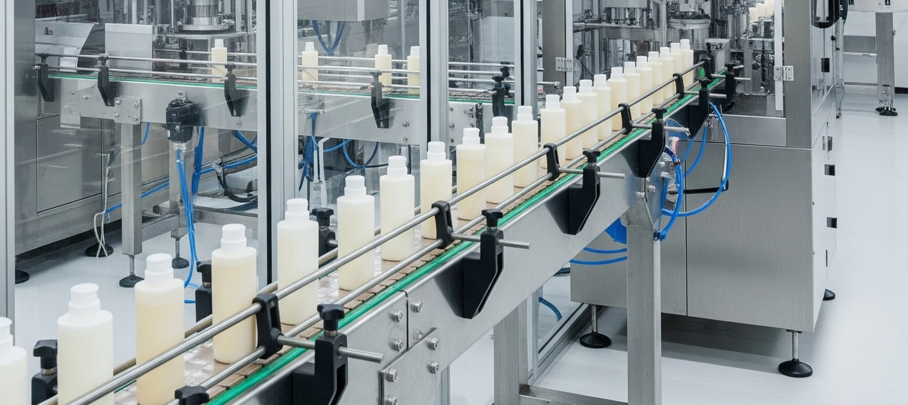

Cada zona del envase, con su control
Desarrollamos sistemas de visión artificial que inspeccionan de forma automática envases, tapones, etiquetas y códigos en líneas de producción de cosméticos.
 123
123
Tapón y boca
Presencia, posición e integridad del tapón o del dosificador.
Envase
Defectos visuales del envase, revisado en todo su perímetro.
Etiqueta y códigos
Posición y estado de la etiqueta a 360°; lectura y validación OCR de lotes y fechas.
